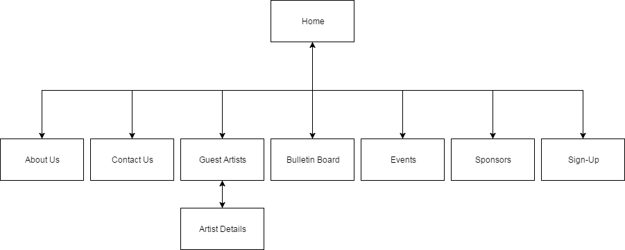

Name: Joshua Gale, James Raymer, Quinten Hay
Mission statement:
The mission of the Barrier Reef Orchestra website is to increase the number of people attending concerts by 20% or more.
Success Evaluation:
to evaluate the success of the website, the number of people attending the two concerts before the release of the website and the two concerts after the website is published will be recorded. If there is an audience increase of 20% or greater then the website will be considered a success
Target Audience
The target audience for the Barrier Reef Orchestra website will be aimed for people between the ages of 15 and 25
This age bracket will be catered to by making the text easy to skim through to obtain the valuable information. A simple colour scheme with a focus on graphical content will also be used to help this age group navigate the website
Content
Flow Chart
https://github.com/JoshuaGale/Assignment2.git